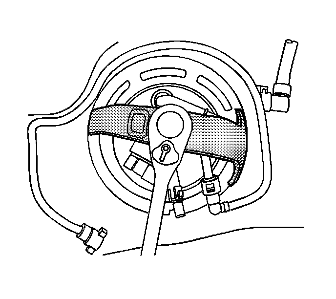
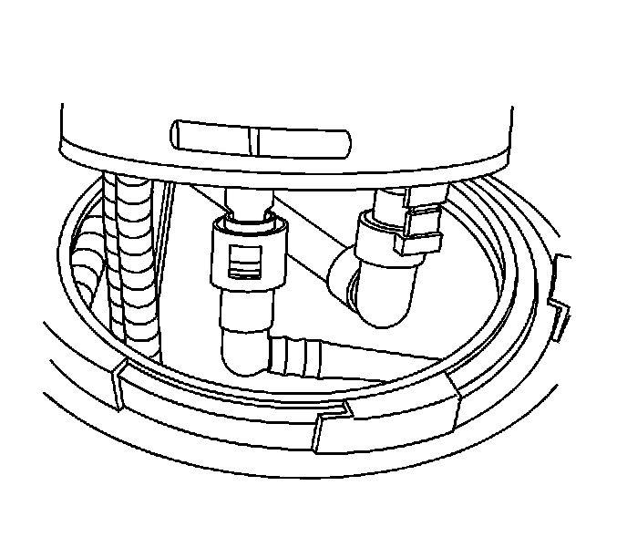
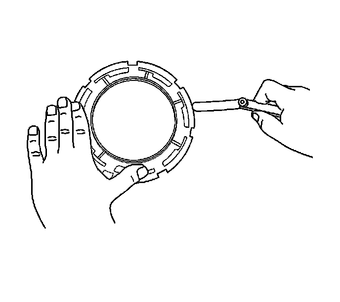

Fuel Tank Pump Module Replacement (2500 LWB - 43.5L (11.5 Gal) Tank-Rear)
FUEL TANK PUMP MODULE REPLACEMENT (2500 LWB - 43.5L (11.5 gal) Tank-Rear)
TOOLS REQUIRED
J 45722 Fuel Sender Lock Ring Wrench
REMOVAL PROCEDURE

1. Remove the rear fuel tank.
2. Disconnect the evaporative emission (EVAP) line quick connect fittings from the fuel tank module.
3. NOTE:
- Avoid damaging the lock ring. Use only J-45722 to prevent damage to the lock ring.
- Do Not handle the fuel sender assembly by the fuel pipes. The amount of leverage generated by handling the fuel pipes could damage the joints.
IMPORTANT: Do NOT use impact tools. Significant force will be required to release the lock ring. The use of a hammer and screwdriver is not recommended. Secure the fuel tank in order to prevent fuel tank rotation.
Using the J 45722 and a long breaker bar, rotate the ring clockwise unlocking the fuel tank module lock ring.
4. Remove the lock ring.

5. Carefully lift the fuel tank module from the fuel tank enough to access the quick connect fittings below the module cover. Disconnect the quick connect fittings.
6. Remove the fuel tank module.
7. Remove and discard the fuel tank module seal.
8. IMPORTANT:
- Some lock rings were manufactured with "DO NOT REUSE" stamped into them. These lock rings may be reused if they are not damaged or warped.
- Inspect the lock ring for damage due to improper removal or installation procedures. If damage is found, install a NEW lock ring.
- Check the lock ring for flatness.

Place the lock ring on a flat surface. Measure the clearance between the lock ring and the flat surface using a feeler gage at 7 points.
9. If warpage is less than 0.41 mm (0.016 in), the lock ring does not require replacement.
10. If warpage is greater than 0.41 mm (0.016 in), the lock ring must be replaced.
INSTALLATION PROCEDURE
1. Install a NEW fuel tank module seal onto the fuel tank.
2. Pull the vent lines in the tank up as far as possible for ease of installation.
3. Position the fuel tank module part way into the fuel tank.
4. Connect the quick connect fittings to the module.
5. Install the module into the fuel tank.
6. Place the lock ring into position.
7. IMPORTANT:
- Always replace the fuel sender seal when installing the fuel sender assembly. Replace the lock ring if necessary. DO NOT apply any type of lubrication in the seal groove.
- Ensure the lock ring is installed with the correct side facing upward. A correctly installed lock ring will only turn in a clockwise direction.
Rotate the lock ring counterclockwise using the J 45722 until fully seated.
8. Connect the EVAP line quick connect fittings to the fuel tank module.
9. Install the rear fuel tank.